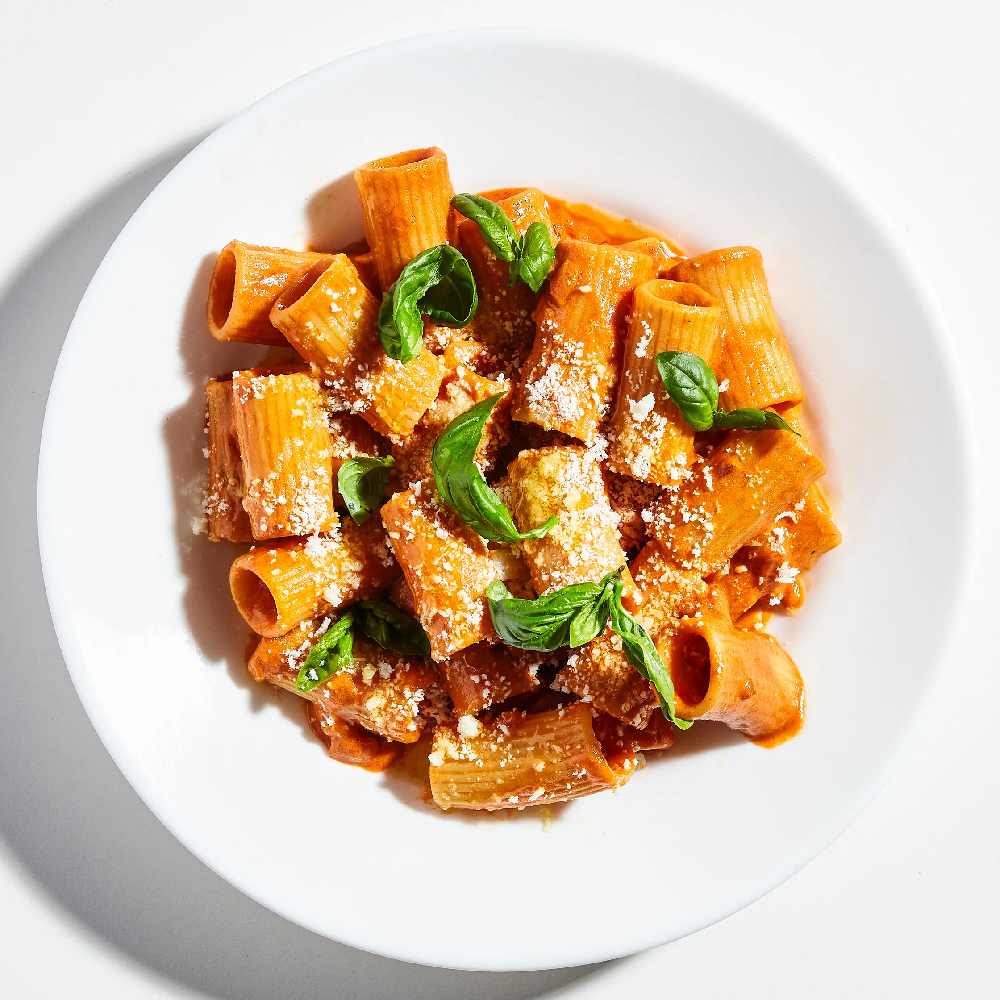

Vodka Pasta

Description
Before you convince yourself there's no way that a little onion,
tomato paste, and cream can come together in mere minutes to make one
of the best homemade pasta sauces you've ever had, hear us out. Better yet,
make this recipe for yourself. Just try and use double-concentrated tomato paste,
which packs more flavor than the standard stuff.
Ingredients
- Kosher salt
- 1 medium onion
- 4 garlic cloves
- 4 oz. parmesan cheese
- 2 tbsp extra-virgin olive oil
- double double-concentrated tomato paste
- red pepper flakes
- 2 oz vodka
- heavy cream
- 1 lb rigatoni
Preparation
- Boil water
- Peel and chop onion
- Smah garlic cloves
- Grate cheese
- Heat oil, cook onions and garlic
- Cook tomato paste
- Add in vodka
- Add pasta